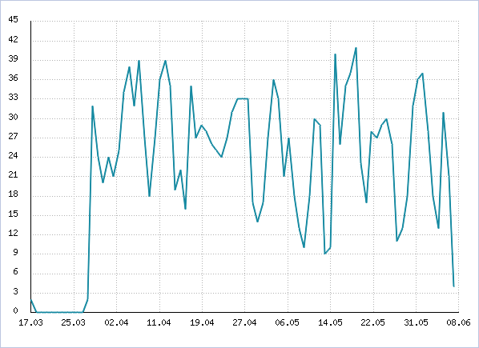

Эта форма показывает все данные, собранные системой статистики по выбранной для анализа рекламной кампании (или всем кампаниям). Форма анализа открывается путём нажатия на кнопку меню действий в строке определенной рекламной кампании и выбора пункта меню Анализ рекламной кампании (на странице обзора рекламных кампаний: Рекламные кампании -> Список кампаний).
Фильтр
| Параметр | Описание |
|---|---|
| Найти | Поле, позволяющее отобрать рекламную кампанию для анализа по ее основным параметрам: идентификатору, referer1 или referer2. Это поле присутствует, даже если фильтр свернут. |
| Дата | В этом поле можно выбрать период времени, за которые требуется вывести данные по рекламной кампании. Если период выбран, отчет вкладки Статистика содержит столбец Период. |
| Показать все условия | Отражает все поля фильтра. |
| Скрыть все условия | Скрывает все поля фильтра, кроме полей по умолчанию. |
Важно!
Нажатие кнопки Найти выводит информацию по рекламной кампании, выбранной путём заполнения поля Найти фильтра (т.е., по системному идентификатору или параметрам referer1 / referer2). Нажатие кнопки Отменить отменяет фильтрацию, т.е. выводит информацию сразу по всем рекламным кампаниям.
Таблицы отчетов
Поскольку система собирает и отображает очень большое количество статистической информации, она сгруппирована по категориям и размещена внутри листа свойств с закладками. Страницы свойств (вкладки) содержат соответствующую информацию.
Вкладка "Статистика"
Эта вкладка содержит две таблицы: с количественными и относительными параметрами.
Таблица количественных параметров имеет такой формат.
| Сегодня | Вчера | Позавчера | Период | Всего | ||||||
|---|---|---|---|---|---|---|---|---|---|---|
| Сессий | ||||||||||
| Посетителей | ||||||||||
| Новых посетителей | ||||||||||
| Добавивших в избранное | ||||||||||
| Хостов (уникальных IP адресов) | ||||||||||
| Хитов | ||||||||||
Строки таблицы показывают значения параметров, указанных в левом столбце, для дня, обозначенного в шапке таблицы. Столбец Период включается в таблицу, если в фильтре установлен параметр Период. Последний столбец таблицы показывает общее количество событий по каждому параметру.
Ячейки столбцов (Сегодня, Вчера, Позавчера, Период, Всего) разделены на две. Первая ячейка содержит значение показателя на прямом заходе (прямых переходах). Вторая содержит значение показателя на возврате.
Возврат по рекламной кампании подразумевает ситуацию, когда посетитель делал непосредственный (прямой) заход по рекламной кампании и спустя некоторое время вернулся на сайт, при условии, что в этот промежуток времени он больше не делал прямых заходов по другим рекламным кампаниям.
Таблица относительных параметров:
| Аналитические параметры | |
|---|---|
| Посетителей за день | Среднее значение количества посетителей за день за все время ведения статистики. |
| Внимательность | Среднее значение количества хитов за сессию на прямом заходе и на возврате. |
| Активность | Среднее значение количества всех событий, совершенных на прямом заходе либо возврате к количеству посетителей пришедших по рекламной кампании (на прямом заходе). |
| Новых посетителей | Соотношение количества новых посетителей, впервые пришедших на сайт, к количеству всех посетителей пришедших по рекламной кампании. |
| Возвратилось | Процент посетителей, возвратившихся на сайт после первого захода по рекламной кампании. |
Вкладка "Графики"
Эта вкладка показывает два графика по выбранной рекламной кампании: график посещаемости и график событий, в разрезе по дням. Ниже графиков выводится легенда, причем легенда графика событий содержит ссылки на форму просмотра типов событий.
Пример графика посещаемости
Пример графика событий

Вкладка "Финансы"
Эта вкладка содержит две таблицы. В первой представлены данные о затратах, доходах и окупаемости рекламной кампании.
| Параметр | Описание |
|---|---|
| Затраты | Денежные затраты на рекламную кампанию. |
| Доходы | Сумма по всем денежно-значимым событиям, произошедших в рамках рекламной кампании. Также доходы можно задать вручную в настройках кампании. |
| Прибыль | Разница между доходами и затратами. |
| Рентабельность (ROI) | Рентабельность рекламной кампании, рассчитывается по формуле: (прибыль / расходы) * 100%. |
| Цена за переход | Отношение затрат к суммарному количеству сессий на прямом заходе. |
| Цена за посетителя | Отношение затрат к суммарному количеству посетителей на прямом заходе. |
Во второй таблице представлена информация о финансовых событиях рекламной кампании.
Вкладка "События"
Эта вкладка содержит таблицу, в которой отражены произошедшие события.
Вкладка "Точки входа"
Эта форма показывает диаграмму и отчёт точек входа на сайт по выбранной рекламной кампании.
Пример диаграммы точек входа
Для каждого сегмента диаграммы, легенда показывает:
- как часто та или иная страница/раздел были использованы в качестве точек входа;
- ссылку (»), ведущую на соответствующую страницу или раздел;
- ссылку на просмотр диаграммы точек входа относительно этого раздела;
- количество хитов в виде ссылки на детальный отчет по хитам посетителей.
Список точек входа
Таблица показывает количество сессий по точкам входа (страницам/разделам).
| Меню действий | ID | Раздел/страница | Сессий | Процент |
|---|---|---|---|---|
| [2] | [3] | [4] | [5] | |
| Выбрано: [6] | ||||
- Кнопка, при нажатии на которую открывается контекстное меню, содержащее следующие команды:
- График посещаемости данной страницы/раздела - открывает (в отдельном окне) страницу с соответствующим графиком (см. ниже).
- Статистика переходов по ссылкам с данной страницы/раздела - просмотр отчета о перехода по ссылкам только с этой страницы.
- Порядковый номер записи.
- Ссылка и путь к странице/разделу.
- Количество уникальных сессий за выбранный период для выбранной рекламной кампании.
- Процент посещений или переходов с этой страницы/раздела.
- Количество записей, выбранных из базы данных.
Вкладка "Точки выхода"
Отчет на этой вкладке построен аналогично отчету по точкам входа, но показывает информацию по страницам и разделам сайта, которыми завершался просмотр сайта посетителями, пришедшими по выбранной рекламной кампании.
Вкладка "Популярное"
Эта вкладка также аналогична отчету по точкам входа, но показывает информацию по наиболее популярным страницам и разделам сайта, просмотренным посетителями, пришедшими по выбранной рекламной кампании. Однако поскольку этот отчет предназначен для анализа просмотров страниц/разделов (т.е. хитов), он показывает количество хитов, а не сессий (в отличие от отчета по точкам входа).
Вкладка "Отрезки путей"
Эта вкладка показывает диаграмму (в виде таблицы) отрезков путей по сайту. Также можно отобразить диаграмму страниц, на которые уходили посетители с любого отрезка пути.
| Номер | Отрезок пути / Страница | Переходов | Процент |
|---|---|---|---|
| номер
пути | [1] | [2] | [3] |
| Выбрано: [4] | Всего: [5] | ||
- Ссылка (»), ведущая на соответствующую страницу, и набор последующих страниц пути либо отрезков пути. Ссылка на имени страницы позволяет перейти на диаграмму для отрезка пути, заканчивающегося данной страницей.
- Абсолютное значение количества переходов.
- Процентное соотношение количества переходов.
- Количество путей, выбранных для отображения.
- Общее количество путей.
Вкладка "Пути по сайту"
Отчет на этой вкладке аналогичен отчету по отрезкам путей, но показывает информацию по страницам и разделам сайта, которыми завершался просмотр сайта посетителями, пришедшими по выбранной рекламной кампании.
| © «Битрикс», 2001-2008, «1C-Битрикс», 2008 | 1С-Битрикс: Управление сайтом |